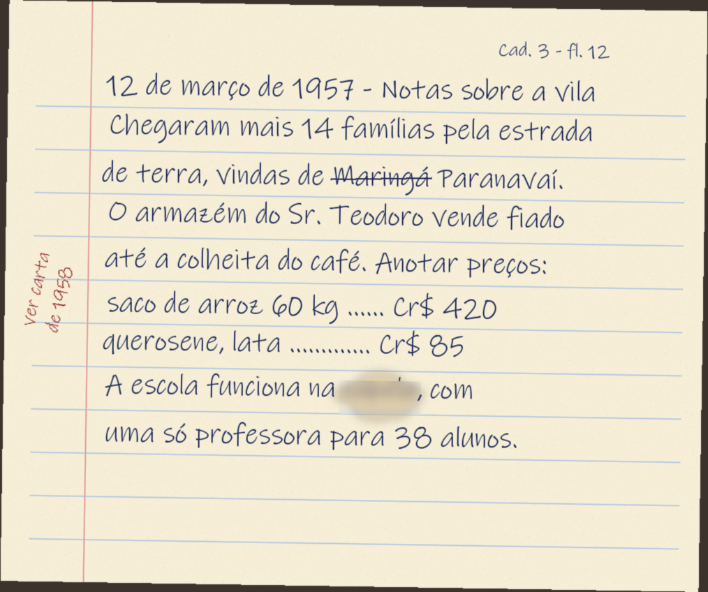

1. Original e transcrição lado a lado

riscado = riscado no original (mantido)
[palavra?] = leitura provável
[ilegível] = não dá para ler, com o motivo
[nota na margem] = escrito fora do corpo
2. Palavras em dúvida (vai junto na entrega)
| Folha / linha | Leitura provável | Por quê |
|---|---|---|
| 12 / 4 | Teodoro | o "T" pode ser "F" (Feodoro?) |
| 13 / 4 | quase | letra emendada; pode ser "uns" |
| 12 / 8 | (ilegível) | mancha de umidade; pelo sentido, o lugar onde a escola funciona |
Nada é "adivinhado" em silêncio: toda leitura incerta fica marcada para você decidir.
Baixar a transcrição (.docx) Baixar em texto (.txt)3. Como eu trabalho
- Você envia os PDFs ou fotos. Eu conto as páginas e passo prazo e valor por página antes de começar.
- Leitura com apoio de ferramentas: OCR comum quase não lê letra de mão, então cada linha é lida por mim, com ampliação e IA de apoio, e conferida com a imagem.
- Fidelidade: mantenho grafia, abreviações e quebras do original; riscos, notas de margem e trechos ilegíveis ficam marcados, não somem.
- Entrega em Word e em texto, com a folha de origem de cada trecho e a tabela de dúvidas, pronto para pesquisar (Ctrl+F) e editar.